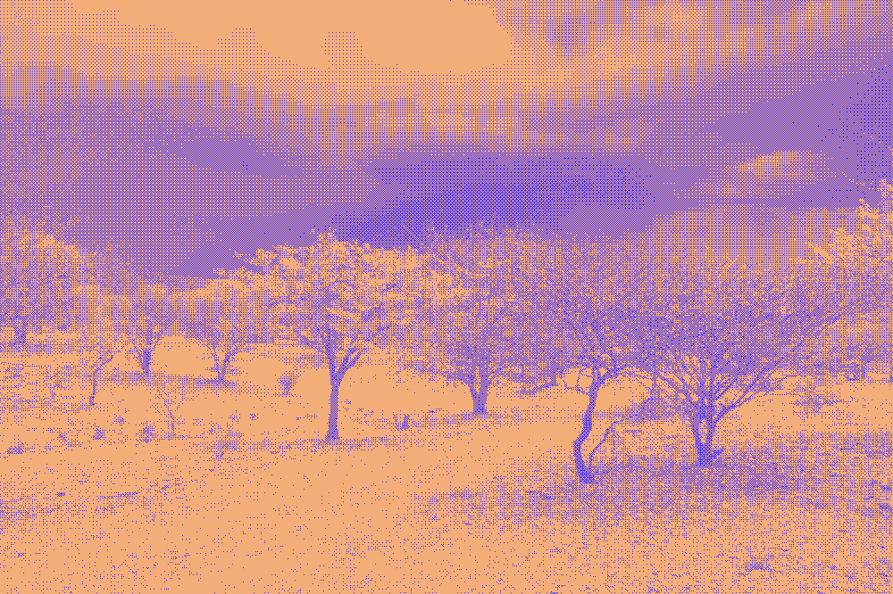
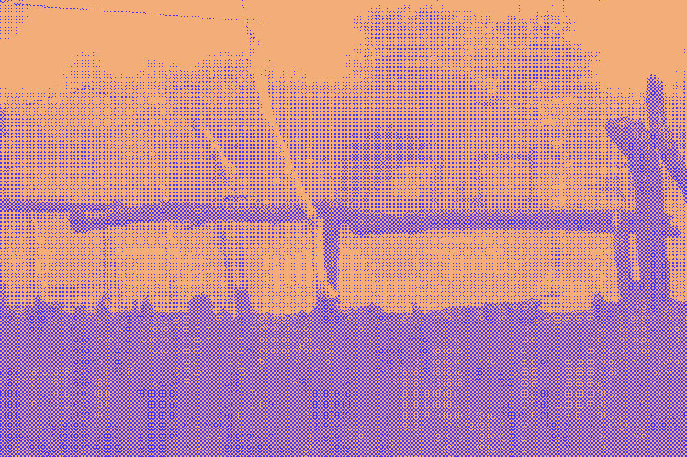

a Weather Reports workshop. Hosted by Prof. Birgit Schneider and Maximilian Hepach. 
To register, please email Maximilian Hepach.
19. January 2023, 15:00-18:00
ZeM (Brandenburgisches Zentrum für Medienwissenschaften, Hermann-Elflein-Str. 18, 14467 Potsdam)
Prof. Michael Schnegg (Institut für Ethnologie, Universität Hamburg)
“Working as an anthropologist among Khoekhoegowab-speaking pastoralists in rural Namibia, I realised that indigenous and scientific observations of the weather have many things in common. However, the ways these observations are rendered meaningful could hardly be more different. While scientists explain the arrival of the seasonal rains with high- and low-pressure systems, Damara people attribute it to the love and care between two winds. To know the weather, I went on to discover, is situational and multiple. To theorise this multiplicity, I mobilise Bernhard Waldenfels’ responsive phenomenology, which highlights how knowledge is an embedded, embodied, and extended response to what Waldenfels calls ‘das Fremde’ (the alien/foreign).”
In this workshop, we take Prof. Michael Schnegg's observations and research as a starting-point to reflect on different ways of knowing weather and climate. The increased frequency and intensity of extreme weather events raise the question of how weather and climate change are experienced by different people in different places unequally with a renewed urgency. How does one make global warming as a planetary predicament legible without universalising the ways of knowing which render it conspicuous, for instance through climate models? How does one do justice to different ways of experiencing and knowing weather and climate without losing sense of a shared reality?
This workshop will tackle some of the conceptual challenges climate change presents us with through the theoretical lens of phenomenology. In preparation for the workshop, we ask that participants read two short texts–one by Michael Schnegg, another by Bernhard Waldenfels–to help frame our discussion. On January 19th, Michael Schnegg will first introduce his own anthropological and phenomenological research on weather and climate. In response to this introduction, 2-3 respondents will relate Schnegg's work to a wider set of concerns, preparing the discussion. The second half of the workshop will be dedicated to a group discussion, where participants may, for instance, present their own questions or relate a phenomenological approach (to weather and climate) back to their own research.
Michael Schnegg works as an anthropologist at the Universität Hamburg, Germany. His research explores how humans collectively enact their understandings of and engagements with the nonhuman world. To do so, he collaborates in inter- and transdisciplinary research projects (LINGS, CliSAP, CliCCS, TFO, SASSCAL, Gold matters). The results are published in a wide range of journals in anthropology, sociology, economics, geography, and theoretical physics.
Schnegg M (2019) The Life of Winds: Knowing the Namibian Weather from Someplace and from Noplace. American Anthropologist 121(4): 830-844.
Waldenfels B ([2006] 2011) Phenomenology of the alien: basic concepts. Evanston, IL: Northwestern University Press, Chapter 3. 